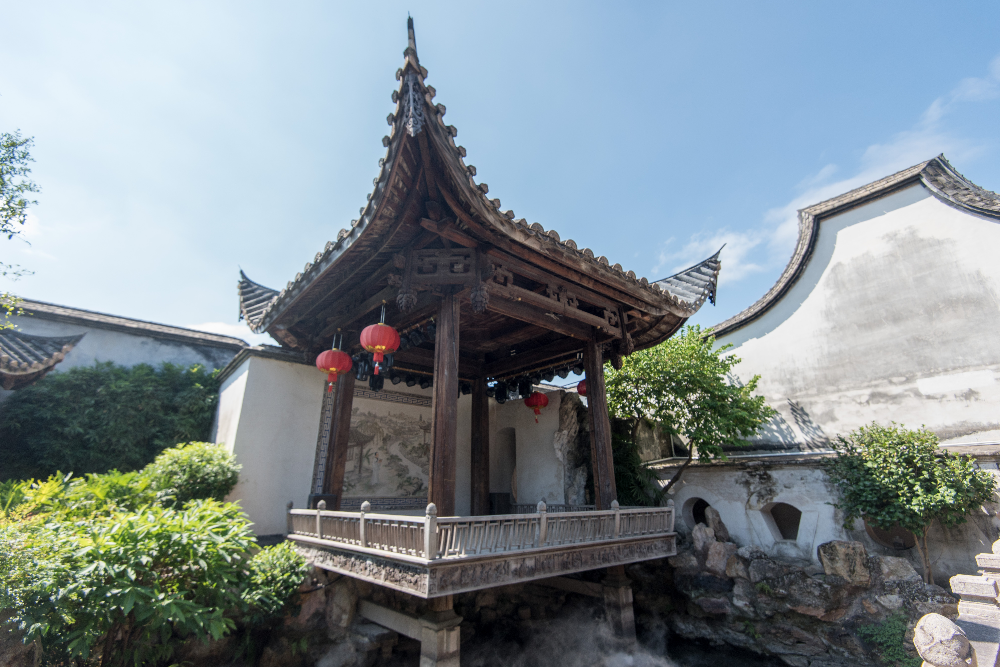
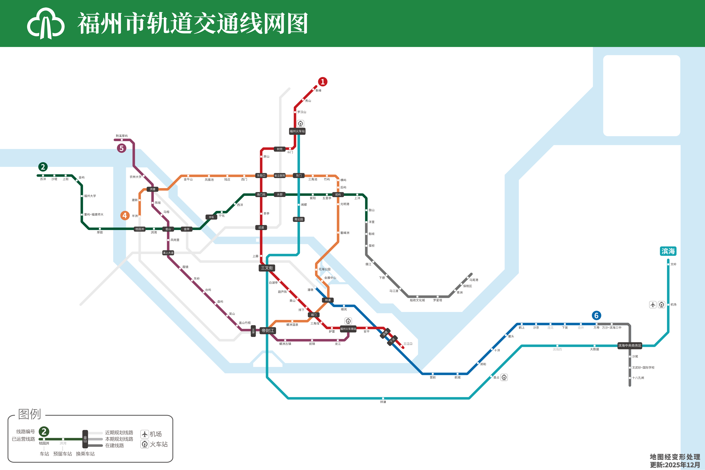
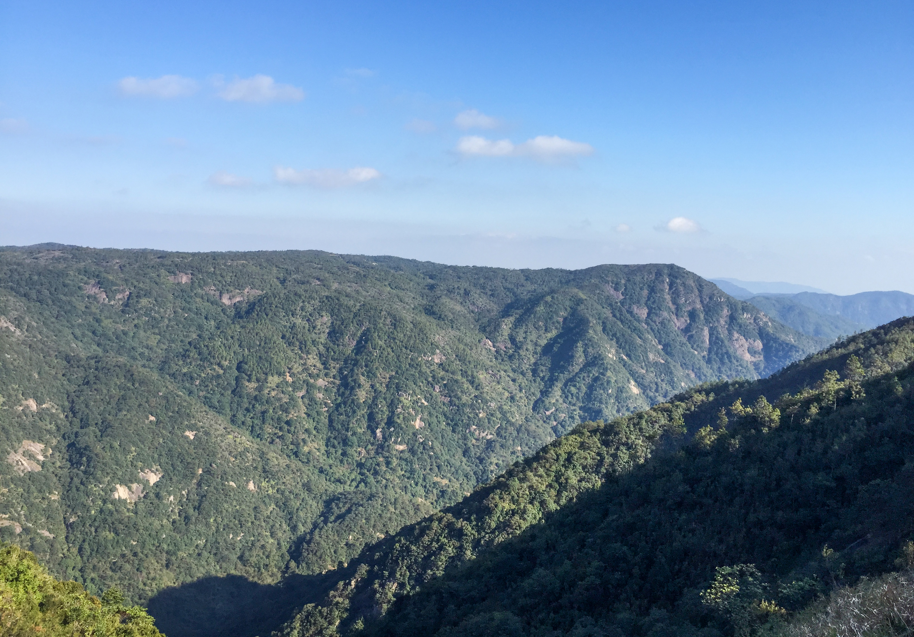
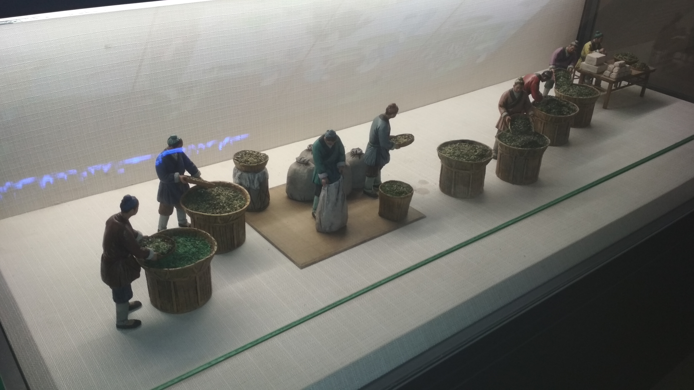
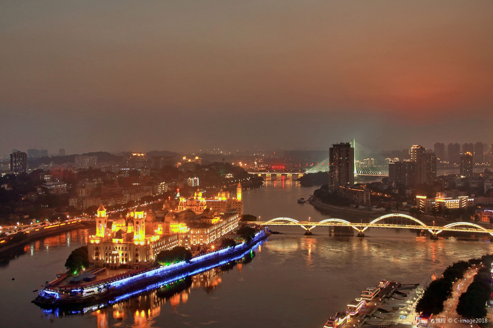
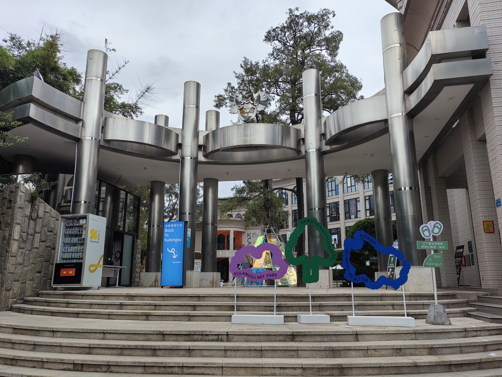

Discover the culture, history and future of Fuzhou.
Flowing through the city for thousands of years, the Minjiang River shaped the culture, trade and identity of Fuzhou. Today it remains one of the city's most iconic landscapes.

The famous historical district continues to attract international tourists with its Ming and Qing dynasty architecture and traditional Fuzhou culture.
Read Article →
New metro lines are connecting districts faster than ever, improving transportation and supporting sustainable development across the city.
Read Article →
Located in the mountains above the city, Guling offers cool weather, historical villas, and breathtaking views during the summer season.
Read Article →
Fuzhou jasmine tea is recognized worldwide for its fragrance and craftsmanship, reflecting centuries of local tea culture.
Read Article →
Modern cafés, waterfront walks and skyline lighting projects are transforming the evening atmosphere of downtown Fuzhou.
Read Article →
International partnerships and innovation programs are helping Fuzhou become a growing educational center in Southeast China.
Read Article →